Benchmark / Use cases / Cloud top height / Results / T44PNB-20181117
T44PNB-20181117
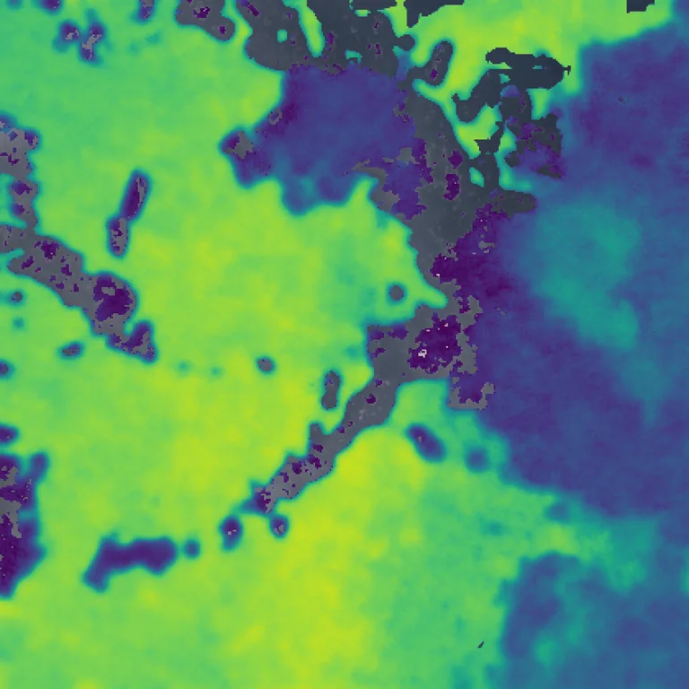
Cloud top height retrieved by Clouds Decoded, from 0 km in purple to 15 km in yellow, over the true-colour crop.
Sample
| surface | ocean |
|---|---|
| regime | multilayer |
| product | S2B_MSIL1C_20181117T050059_N0500_R119_T44PNB_20230726T173537 |
| col_off | 4740 |
| row_off | 3540 |
Compression ratio and cloud top height
Each point is one level of a codec, named when you point at it, on this sample.
GeoZL PIVCOGeoZL PFORJPEG XLgeorvq
Change in cloud top height
GeoZL PIVCO

6.0× · cth_mae +42.483
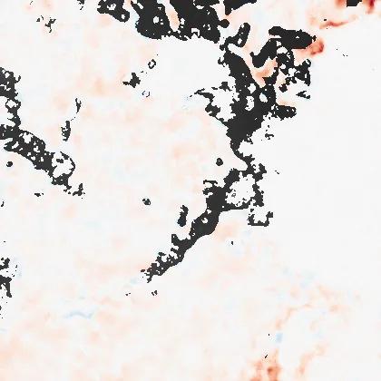
8.5× · cth_mae +104.064

11.1× · cth_mae +671.150

13.0× · cth_mae +1303.830

18.1× · cth_mae +1383.301
GeoZL PFOR
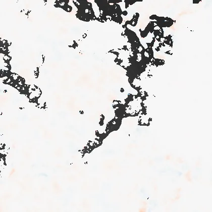
5.0× · cth_mae +42.483

6.3× · cth_mae +104.064
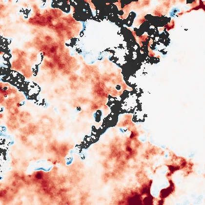
7.3× · cth_mae +671.150
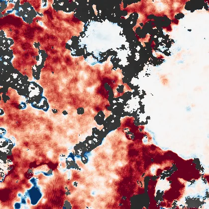
10.0× · cth_mae +1303.830
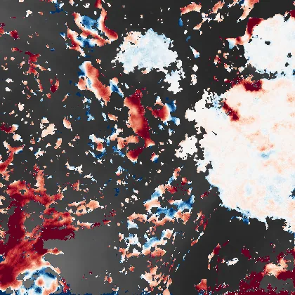
14.9× · cth_mae +1383.301
JPEG XL
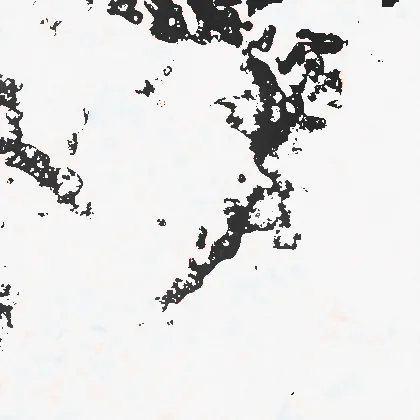
7.5× · cth_mae +27.452
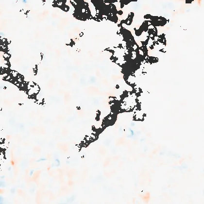
17.0× · cth_mae +73.977
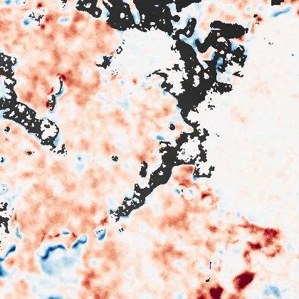
52.2× · cth_mae +455.678
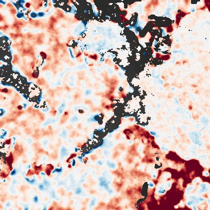
172.0× · cth_mae +782.406
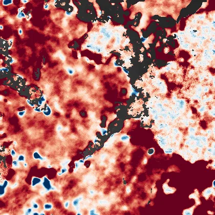
443.2× · cth_mae +1979.568
georvq
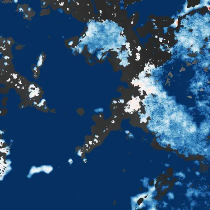
287.3× · cth_mae +5398.766
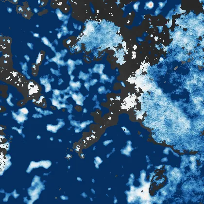
132.9× · cth_mae +3407.917
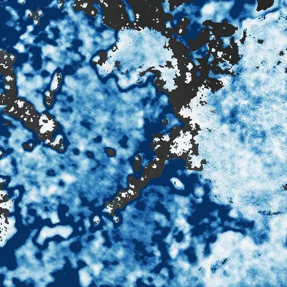
86.5× · cth_mae +1827.982
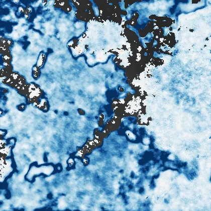
64.1× · cth_mae +1291.567
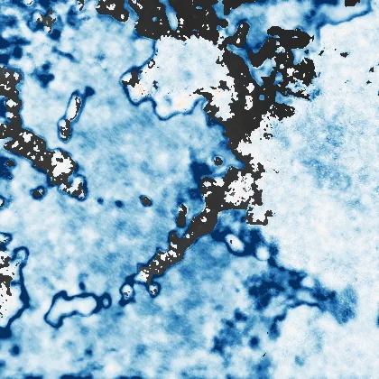
50.9× · cth_mae +1079.427
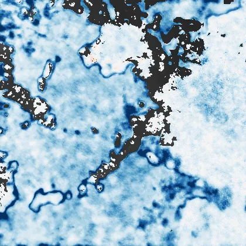
42.2× · cth_mae +936.001
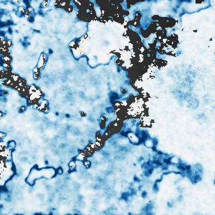
36.1× · cth_mae +869.366
31.5× · cth_mae +799.644
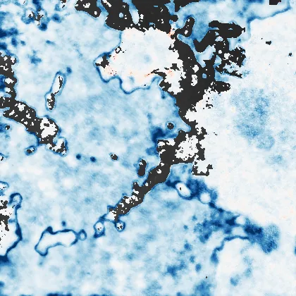
27.9× · cth_mae +757.767